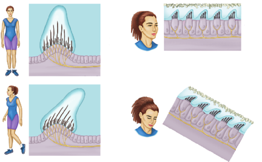

The is used for hearing. Nearby vestibular structures provide information about head movement and position. Both systems use hair cells, but different movements bend their projections.
Different balance mechanisms
The canal cupula is distinct from the otolithic membrane containing calcium-carbonate particles. This is a comparison of mechanisms, not a dissection view.
When your head starts turning, the move with it. The fluid inside briefly lags behind. This relative movement bends a jelly-like structure called the , which bends hair-cell projections and changes their signals.
The cupula sits in an enlarged region of a canal called the . The canals lie in different planes, allowing the system to detect changes in rotation in different directions. This contribution to balance is called rotational equilibrium.
Compare the unbent and bent states

The left pair shows cupula deflection during rotation; the right pair shows the weighted otolithic membrane in different head positions. Read each upper state against the state immediately below it.
In the left pair, locate the tall transparent cupula around the bundle tips. The lower cupula leans relative to the hair-cell base; the bundles bend with it. It is the soft covering and bundles that deflect, not the entire bony loop folding. At the start of a turn, the canal walls move with the head while fluid initially lags relative to them. That difference in motion supplies the force on the cupula.
Now compare the right-hand pair. The small particles along the top add mass to a membrane lying over many hair cells. When the head tilts, gravity shifts that weighted layer relative to the cells below it. The lower drawing shows bent bundles, even though a head can subsequently be held in that tilted position. The particles belong to the otolithic membrane in this pair, not inside the cupula on the left.
Why stopping can still feel like movement
When your head stops turning, the fluid may continue moving briefly relative to the canals. The and hair-cell projections can still bend, so the brain may receive signals of movement after the turn has stopped.
The key is relative movement: movement of the fluid compared with the canal. The rigid bony canal does not have to bend to produce the signal. Use this described case to explain the mechanism; do not deliberately make yourself dizzy.
A described turn through time
Stage
Canal and fluid relationship
Interpretation
Turn begins
The canal wall starts moving; fluid lags relative to it
The cupula is deflected and bundle signaling changes
Turn stops
The canal wall stops; fluid can continue moving briefly relative to it
The cupula can be deflected in the opposite direction
Relative motion subsides
The transient fluid-to-wall motion declines
The movement-related deflection declines; this does not mean all vestibular signaling is absent
The movement being sensed is a change in rotation. Do not use the canal signal as a simple speedometer for indefinite steady travel. Also distinguish a transient turn from a held tilt: gravity can continue to act on a weighted otolithic membrane while the head remains still in a particular orientation.
Straight-line movement and gravity use a different structure
The and detect straight-line acceleration and head position relative to gravity. Their hair-cell projections contact a jelly-like otolithic membrane. Tiny calcium-carbonate particles, called or otoconia, add weight to the membrane.
Gravity or straight-line acceleration shifts this weighted membrane relative to the hair cells. Their projections bend and signalling changes. The utricle is especially sensitive to horizontal acceleration; the saccule is especially sensitive to vertical acceleration.
Keep the two mechanisms separate: fluid movement bends a during changes in rotation; gravity or straight-line acceleration shifts a weighted otolithic membrane. Information about position relative to gravity contributes to gravitational equilibrium.
Acceleration is a change in velocity: speeding up, slowing down or changing direction. For a straight-line example, the beginning of an elevator's upward journey differs from its later steady-speed portion. In the beginning, upward acceleration adds a changing mechanical influence on the otolith organs. During steady upward motion, that extra acceleration is absent, although gravity still acts. “Moving upward” alone is therefore not a complete description of the relevant stimulus.
The brain combines several sources of information
Balance also uses vision and proprioception. Proprioceptors in muscles, tendons and joints provide information about body position and movement. They help you know where a limb is without looking at it.
The brain combines these signals with vestibular information to adjust posture and coordinate movement. Removing one source of information does not remove all the others, but it leaves less information to compare.
All balance activities here use diagrams and described situations. No spinning, blindfolded standing or other physical balance test is required.
Work through a disagreement between signals
Consider a hypothetical passenger who has just stopped turning. A stable view of the room and pressure through the feet indicate that the body is no longer turning relative to the floor. Meanwhile, residual fluid movement briefly deflects a canal cupula. Visual and body-position information therefore support one estimate, while vestibular input still carries a movement-related change. The brain must combine them; that mismatch can disturb the perceived estimate of motion. We have explained how disagreement can arise without claiming that every report of dizziness has this cause.
Proprioceptors report changes in muscle, tendon and joint conditions. They do not replace the eyes' view of the room, but they add information about where the body parts are. The sensory systems provide complementary evidence rather than identical copies. We use written situations here, not spinning or balance tests.
Do the words moving and accelerating mean the same thing?
This is a hypothetical timeline. The passenger faces forward with the same head orientation throughout, and the elevator never rotates.
Interval
Stated movement
A
The elevator increases its upward speed
B
It continues upward at a steady speed in a straight line
C
It slows while still travelling upward
Compare the changing-motion stimulus in A, B and C. Which otolith organ is especially relevant? Explain why B does not imply that gravity or all vestibular signaling disappears, and why C need not involve head rotation.
A hint if you need one
A change in speed can be positive or negative while travel remains in the same direction. Keep acceleration separate from head orientation relative to gravity.
Compare your reasoning
A has upward acceleration because upward speed increases. B has no additional straight-line acceleration from a change of speed, although gravity continues to act on the weighted membrane. C has acceleration opposite the upward motion because speed decreases; it is still a straight-line change. The saccule is especially relevant to these vertical acceleration changes. None requires canal rotation, and absence of an extra acceleration in B is not absence of gravity or of all vestibular information.
Check your explanation
Identifies speed increase, steady speed and slowing separately
Names the saccule for vertical acceleration
Keeps gravity-related information in B
Does not equate slowing with rotation
If you put all three intervals in one category because the elevator travels upward, look at what changes between moments. The direction of travel alone does not identify acceleration.
Adding chemical and contact information
The body combines changing-motion signals, gravity-related information, vision and proprioception to estimate position. Other sensory systems add chemical identity and the detailed pattern of contact with the surroundings. Their receptors face a similar challenge: which features of a stimulus can their signals distinguish?
![Different balance mechanisms. The canal cupula is distinct from the otolithic membrane containing calcium-carbonate particles. This is a comparison of mechanisms, not a dissection view.]()